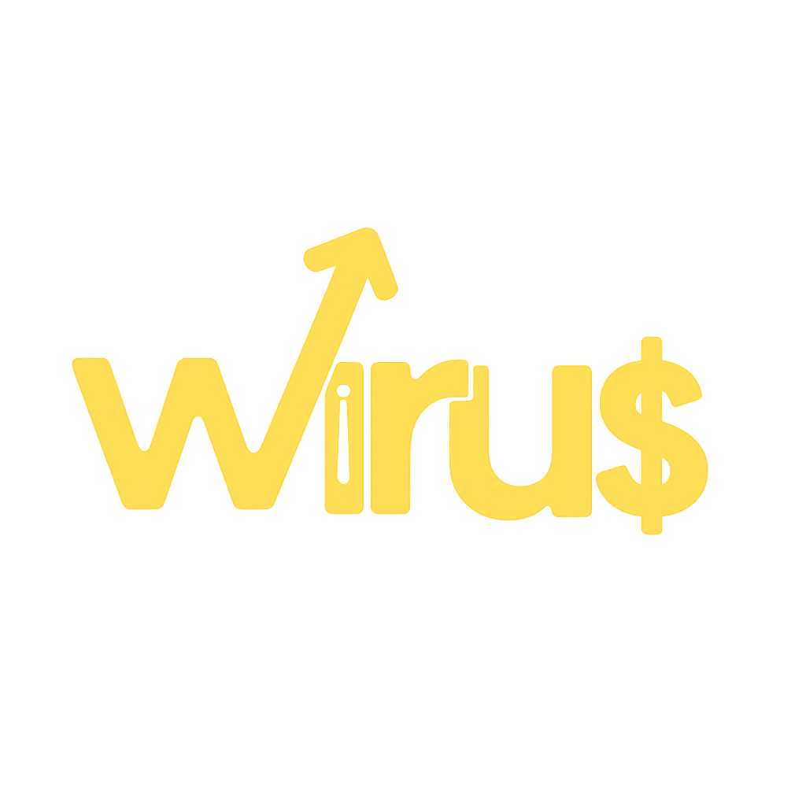

Penjelasan
WIRUS (Wirausaha)
Berperan dalam kegiatan kewirausahaan, seperti berjualan dan mencari dana untuk mendukung program OSIS serta mengajarkan siswa keterampilan manajemen keuangan.

WIRUS (Wirausaha)
Berperan dalam kegiatan kewirausahaan, seperti berjualan dan mencari dana untuk mendukung program OSIS serta mengajarkan siswa keterampilan manajemen keuangan.